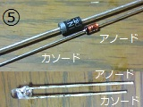

私のエフェクター自作方法【部品編1】抵抗・コンデンサ・半導体部品
2008年11月21日 カテゴリー：私のエフェクター自作方法

[1]抵抗器
その名の通り電気が通るのを邪魔をする働きがあります。単位はΩ（オーム）です。1M（メガ）Ω=1000k（キロ）Ω、1kΩ=1000Ωとなります。小数点の表記を間違えないように1.5MΩを1M5Ωといった表記にすることがあります。また、kやMがつかない場合Rをつける場合（100Ω=100R等）があります。種類は炭素皮膜（カーボン）抵抗、金属皮膜抵抗（キンピ）等があります。特に指定がない場合、エフェクターでは1/4W炭素皮膜抵抗でOKです。私は誤差が少ないということで一応金属皮膜抵抗を使っています。1/4Wというのはどのぐらいの電力（ワット）に耐えられるかという規格です。値は縞模様の色（カラーコード）で判別します。
黒：０ 茶：１ 赤：２ 橙：３ 黄：４ 緑：５ 青：６ 紫：７ 灰：８ 白：９ （精度は金：５％ 茶：１％）
例）４本の縞模様 茶赤橙金の表示：12×10の3乗で12000Ω（=12kΩ）精度5％の抵抗
例）５本の縞模様 茶緑黒橙茶の表示：150×10の3乗で150000Ω（=150kΩ）精度1％の抵抗
[2]可変抵抗器（ボリューム、ポット、ポテンショメーター）
[3]半固定抵抗（トリマー）
手やドライバーの操作で抵抗値を変化させられる抵抗器です。写真のように１、２、３番という番号がつきます。時計回りに回しきったとき２番と３番がくっつき１番と２番の間が最大の抵抗値になった状態です。値は直接表記か、3桁の数字で判別します。ポットには変化の仕方によってAカーブ、Bカーブ、Cカーブ等の種類があります。特に指定がない場合、エフェクターでは直径16mm以下の大きさのポットで大丈夫です。シャフトの直径が6mmのものと6.35mm（1/4インチ）のものがあるので注意が必要です。
例）表記 2 5 4：25×10の4乗で250000Ω(=250kΩ)の抵抗
・Bカーブ…回転に対して直線的に抵抗値が変化します。リニアテーパー、lin(linear)といった表記もします。
・Aカーブ…対数的な変化で、人間の耳の感覚に適しているらしいです。時計回りの場合、回し始めの部分は抵抗値の変化が少なく、回し終わりで急な変化になります。オーディオテーパー、ログテーパー、logといった表記もします。
・Cカーブ…Aカーブの逆の変化になります。少し入手しにくいです。rev log（reverse log)といった表記もします。
[4]コンデンサー（キャパシター）
電気をためる働きがある部品です（イメージしづらいかも）。いろいろな種類がありますが、容量の値によってある程度使う種類は限られます。単位はF（ファラド）です。1μ（マイクロ）F=1000n（ナノ）F、1nF=1000p（ピコ）Fとなります。小数点の表記を間違えないように1.5nFを1n5Fといった表記にすることがあります。「μ」は見た目が似ている「u」で置き換えることがよくあります。耐えられる電圧（耐電圧、耐圧）が決まっていますが、特に指定がない場合、エフェクターでは16V以上の耐圧で大丈夫です。容量の値は直接表記か、3桁の数字で判別します。
例）表記 1 5 4：15×10の4乗で150000pF(=150nF=0.15uF)の容量
・セラミックコンデンサ、マイカコンデンサ…1000pFまでの容量の場合に使うことが多いです。マイカは大きいので使いにくいです。
・積層セラミックコンデンサ…小型で様々な容量があります。電源部分によく使います。
・フィルムコンデンサ…1nF～1uFの容量の場合に使うことが多いです。ボックス型のものは小型なので便利です。
・アルミニウム電解コンデンサ（ケミコン）…1uF以上の容量の場合に使うことが多いです。極性（プラスとマイナス）があるので注意が必要です（マイナス側に表示がしてあります）。ノンポーラ（NP、無極性）、バイポーラ（BP、両極性）のタイプは極性を気にせずに使えます。
・タンタル電解コンデンサ、OS-CON…性能は良いらしいですが、壊れた時ショートする（導線でつないだことと同じことになる）ので私は使ったことがありません。

[5]ダイオード
電流を一方向にしか流さない性質がある部品です。帯がついている方がカソード(陰極)、逆側をアノード(陽極)と呼びます。LED（発光ダイオード）では足が短い方がカソード、長い方がアノードとなります(上写真）。アノードからカソードへのみ電流を流します。

[6]トランジスタ、FET
増幅等の役割を担う部品です。3本の足が出ていて、トランジスタではコレクタ(C)・エミッタ(E)・ベース(B)、FETではドレイン(D)・ゲート(G)・ソース(S)という端子の名前がついています。海外製のものと日本製のものとで足の出方が違います（上写真）。直接はんだづけせずソケットを使っておけば、向きを変えたり足を無理やり曲げたりして差し込むことが可能です。
[7]オペアンプIC
たくさんのトランジスタ等が内蔵されていていろんな回路に使います。へこみがついている箇所から反時計周りに番号がつきます（上写真）。これも直接はんだづけせず、ソケットを使っておくと交換等できるので便利です。